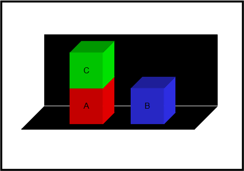
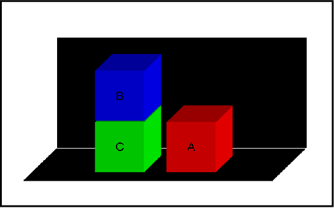
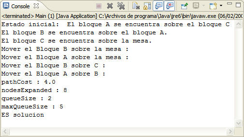
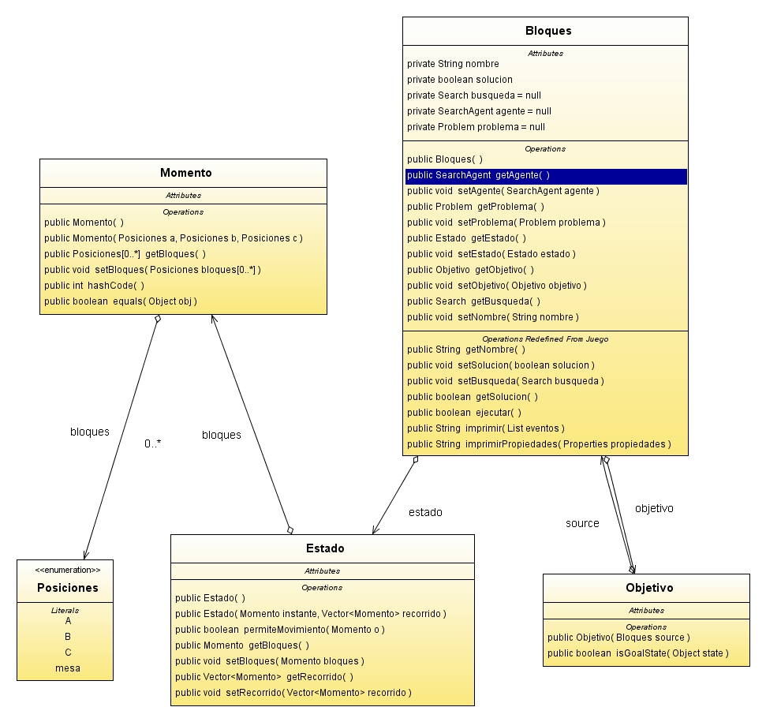

| Bloques |
Disponemos de 3 bloques situados sobre una mesa, el bloque C esta sobre el bloque A y el bloque B esta sobre la mesa.  El objetivo consiste en utilizar los operadores para conseguir el estado final, teniendo como operadores los movimientos de un bloque sobre otro o sobre la mesa.  El estado se representa mediante una tupla de 3 elementos donde cada posición representa una posición. Por defecto, la ultima posición representa la mesa o repositorio donde se sitúan el resto de elementos.
El objetivo del juego consiste en conseguir que dos de los bloques (B y C) estén superpuestos en orden alfabético siendo el bloque B el que este en la cima, por lo que su medida heurística consiste en sumar los bloques que estén situados en una posición incorrecta. Cuanto mayor sea este valor más alejado estará el objetivo, por lo que minimizando esta medida heurística se acercaría la solución del problema. h'(x) = Número de bloques mal colocados.
Los operadores se aplican sólo si cumplen sus precondiciones.
Algoritmo DepthFirstSearch o Primero en profundidad: Técnica que visita un sucesor del nodo actual en cada paso, si éste no tiene sucesores se realiza Backtracking, La implementación se realiza como si se tratase de una pila. Aunque existe una heurística valida, se utiliza un algoritmo de búsqueda ciega con el fin de aumentar la variedad de algoritmos, y aún siendo una búsqueda desinformada, debido al orden de generación de nodos, genera pocos nodos para la obtención de una solución. 
Estado ( Posición 0, Posición 1, Posición 2 ) Se implementa el juego con la representación de estados con la intención de que ser versátil a futuras ampliaciones del juego, así como de ser consientes en todo momento de los elementos que se están utilizando. Estados inalcanzables: Estado inicial: Estado final: |
| Diagrama UML |
A continuacion se expone el diagrama uml de este juego para aportar informacion adicional sobre su implementacion.  |